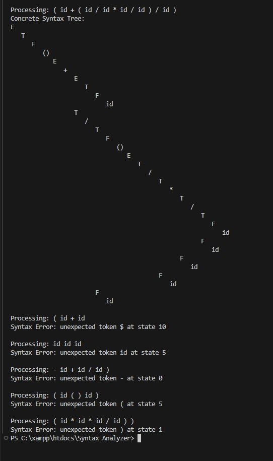

Description: A program that provides an outine on how the syntax anlayzer phase of the compiler processes data.
Technologies Used: C++
Challenges Faced: Ensuring it performs the correct operations it needs to in order parse information.
Outcomes: Successfully created a representation of how a syntax analyzer works and what it does.
GitHub Repository: View on GitHub
